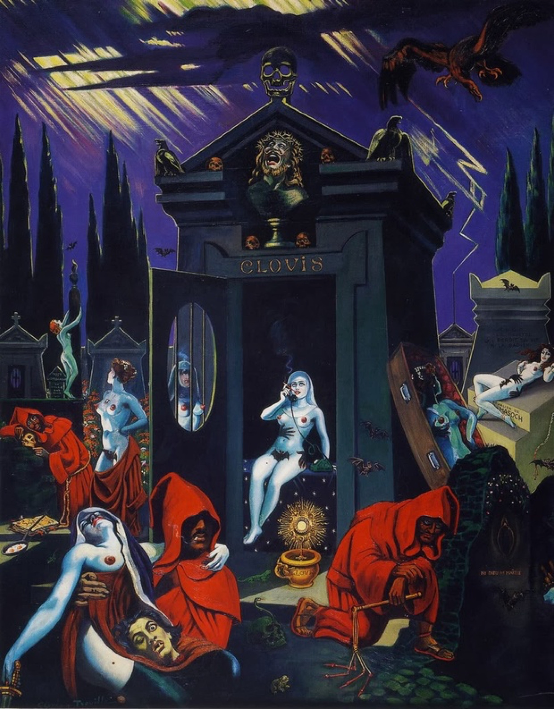

Lágrimas de Eros · Obra 118 de 124
La tumba (Mon tombeau; antes «de Sade»)
Clovis Trouille

Un panteón con el nombre «CLOVIS» entre cipreses, rodeado de frailes encapuchados, desnudos y calaveras, bajo un rayo: una escena funeraria erótica y anticlerical. Bataille indica que antes se tituló «de Sade».
Lo que hace que destaque
Un panteón con el nombre «CLOVIS» entre cipreses, rodeado de frailes encapuchados, desnudos y calaveras, bajo un rayo: una escena funeraria erótica y anticlerical. Bataille indica que antes se tituló «de Sade».
Contexto histórico
Casi seguro es «Mon tombeau», que webs secundarias fechan en 1947-1962 (óleo, 100 × 81 cm, colección particular); no se ha confirmado en una fuente fiable. El pie está en la p. 196 y la imagen en la 197.
Autoría y procedencia
Clovis Trouille (1889-1975), pintor surrealista francés célebre por sus obras anticlericales, satíricas y de un erotismo carnavalesco desbordante.
En los libros
Las lágrimas de Eros, de Georges Bataille · Lámina de la p. 196
Ficha pendiente de contrastar con fuentes académicas.